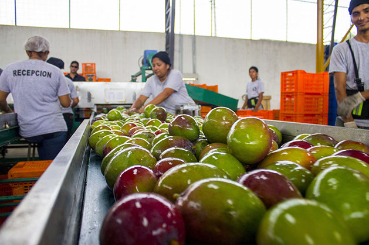
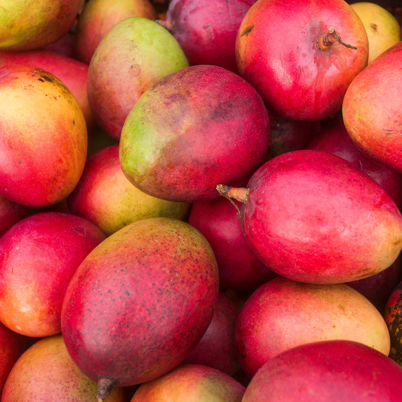
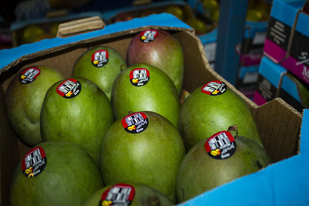

Calidad consistente
Selección especializada y criterios claros desde la finca hasta el despacho.
Integramos producción agrícola, selección especializada y trazabilidad para llevar mango Tommy Atkins ecuatoriano a mercados internacionales.

Coordinamos el trabajo del campo con el control operativo para cuidar la condición del fruto, registrar cada decisión y responder con consistencia a las exigencias del mercado.
Conoce nuestra historiaSelección especializada y criterios claros desde la finca hasta el despacho.
Información organizada de cultivos, lotes e insumos para decisiones confiables.
Buenas prácticas que cuidan los recursos y fortalecen la cadena agrícola.
Agricultores y equipos operativos alineados alrededor de un mismo estándar.

Color distintivo, pulpa firme y excelente comportamiento poscosecha. El Tommy Atkins reúne los atributos que demanda una cadena de distribución internacional.
Cada etapa suma control, información y cuidado para mantener una calidad consistente.
Planificación agrícola y seguimiento responsable de cultivos.
Recolección en el momento adecuado para cuidar la condición.
Revisión de firmeza, presentación y criterios comerciales.
Preparación trazable para mercados que exigen confianza.

Conoce una operación agrícola que convierte información, experiencia y compromiso en confianza.